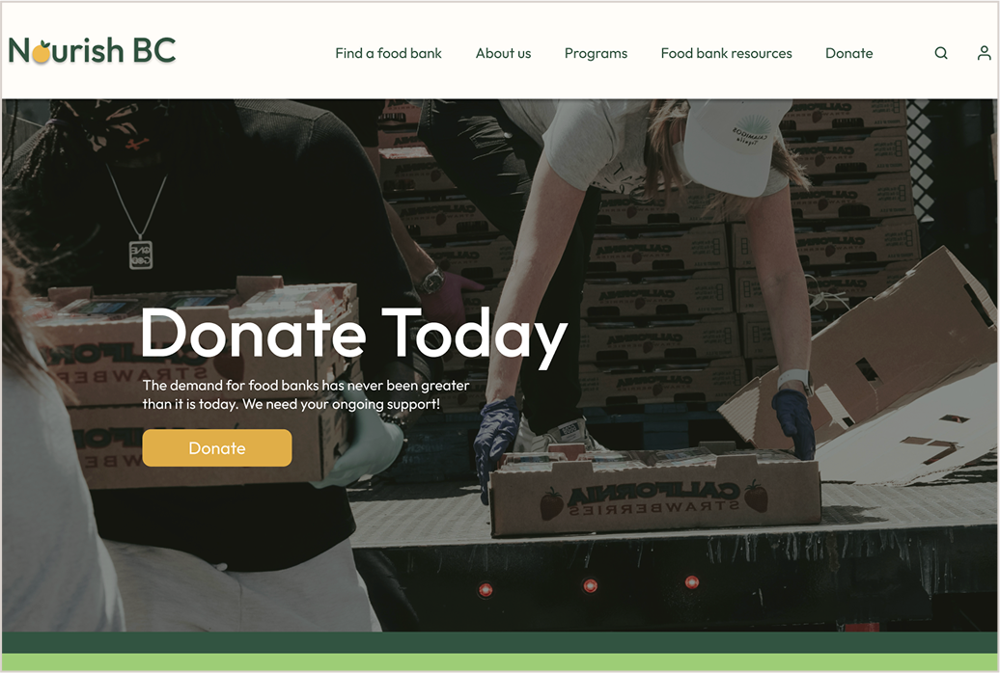
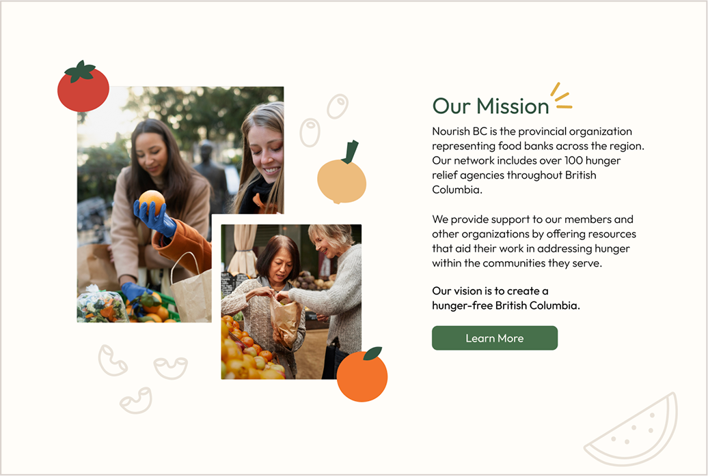

Website Redesign
One of the school projects we got was to redesign an an existing social impact organization. I decided to redesigned a Food bank website, focusing on creating a more visually engaging experience. The original site had cluttered navigation, outdated visuals, and overall felt a bit colder than I would have liked it to. A goal I set for myself was to add fun graphic elements because I’d like to focus more on design in the future.
I started the process by researching the original website, looking into the brand goals and characters. I built a case as to why it was worth being redesigned, updated the colours, and picked a new name that reflected the brands values. I then made a word mark and created a moodboard to best communicate the feeling I was going for. The last weeks of the project were spent working on the wireframes and mockups for the website. I’m quite proud of what I managed to accomplish for this project. There were a lot of graphic elements that I created and didn’t use, and in the future I would maybe spend less time trying to perfect certain aspects as it slowed down my process more than I would have liked.
Nourish BC
Amet minim mollit non deserunt ullamco est sit aliqua dolor do amet sint. Velit officia consequat duis enim velit mollit. Exercitation veniam consequat sunt nostrud amet. Amet minim mollit non deserunt ullamco est sit aliqua dolor do amet sint. Velit officia consequat duis enim velit mollit. Exercitation veniam consequat sunt nostrud amet.
 